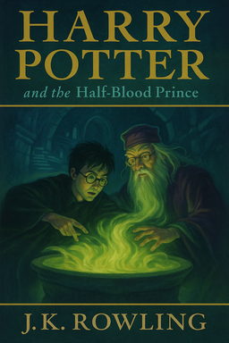

Harry Potter and the Half-Blood Prince
Back to Hogwarts  Dumbledore stood weak and defenseless at the top of the Astronomy Tower, his wand gone, his body supported by the battlements as his strength faded from the potion he had drunk. His face was pale, his eyes tired but calm. Across from him, Draco Malfoy pointed his wand, his hand shaking, his face twisted with fear and inner conflict. He had cornered Dumbledore, had done what Voldemort asked — but the boy could not bring himself to cast the fatal curse. Dumbledore’s voice was gentle, almost pitying. He spoke quietly to Draco, trying to offer him a way out, a path that would not lead to ruin. He assured Draco that he wasn’t a killer, that help was possible, even now. But time was running out. From the stairs and shadows, Death Eaters burst onto the tower, urging Draco to act, jeering at his hesitation.Then Snape appeared. His black robes billowed behind him, his face hard to read — determined, cold. Harry, frozen under his invisibility cloak by Dumbledore’s silent spell, could only watch, unable to move or cry out. Dumbledore turned his gaze upon Snape, his eyes wide, pleading, filled with some unspoken message.“Severus... please...” Snape’s expression twisted — hatred, loathing, and something deeper flickered across his face. He raised his wand slowly, deliberately. For the briefest moment, the night seemed to hold its breath. And then Snape spoke the two words that shattered everything.
“Avada Kedavra!”
A burst of green light erupted from Snape’s wand. The spell struck Dumbledore in the chest. His body was lifted into the air, as if a great gust of wind had thrown him upwards. Time seemed to slow as Dumbledore’s form arced backward over the battlements. He fell — slowly at first — then vanished from sight, tumbling into the darkness below. Around Harry, chaos erupted as the Death Eaters fled through the castle. Harry’s paralysis lifted, and rage filled him. He chased after Snape and the others, spells flying. But Snape deflected Harry’s attacks effortlessly, urging him not to use spells he didn’t understand. When Harry finally tried the spell from the Half-Blood Prince’s book — Sectumsempra — Snape blocked it with ease. He hissed at Harry, revealing his identity: “I am the Half-Blood Prince!” The Death Eaters escaped into the night, leaving the castle broken and grieving.
Summary
Harry Potter and the Half-Blood Prince opens in a world darkened by Voldemort’s return. Both the wizarding and Muggle worlds are suffering: bridges are destroyed, people disappear, and fear spreads. The British Prime Minister is warned by Cornelius Fudge, who has been replaced as Minister for Magic by Rufus Scrimgeour, that Voldemort’s supporters are behind the chaos. Severus Snape, meanwhile, meets with Narcissa Malfoy and Bellatrix Lestrange. Narcissa is desperate, fearing that Voldemort has given her son Draco an impossible mission. In secret, Snape makes an Unbreakable Vow with Narcissa, promising to protect Draco and complete the task if Draco cannot. Harry is spending the summer at the Dursleys’ when Dumbledore arrives to collect him. On their way to the Burrow, Dumbledore takes Harry to persuade Horace Slughorn, a retired Potions master, to return to Hogwarts. Slughorn is known for gathering talented or well-connected students into his social circle. Tempted by the chance to teach the famous Harry Potter, Slughorn agrees to return. At Hogwarts, security is stricter than ever. Aurors are stationed at the castle, and students are repeatedly warned of the dangers beyond the grounds. Draco Malfoy behaves suspiciously from the start, sneaking off and acting secretive. Harry is convinced that Draco has become a Death Eater and is working on a plot inside the school, though others are doubtful. Dumbledore begins giving Harry private lessons, but they are unlike anything Harry has had before. Dumbledore shares memories of Voldemort’s past using the Pensieve. Harry sees Tom Riddle at the orphanage, charming visitors while hiding his cruelty. He watches Riddle at Hogwarts, already manipulative and obsessed with his heritage. One memory shows Riddle asking Professor Slughorn about Horcruxes — dark objects used to hide fragments of the soul, preventing true death. Dumbledore explains that Voldemort has split his soul into pieces, creating multiple Horcruxes to achieve immortality. The diary from Chamber of Secrets was one; Marvolo Gaunt’s ring, which Dumbledore has already destroyed, was another. Together, they must locate and destroy the remaining Horcruxes to defeat Voldemort. Harry excels in Potions thanks to a borrowed textbook filled with handwritten notes and spells by the mysterious “Half-Blood Prince.” The Prince’s tips help Harry brew perfect potions, and the book contains powerful spells unknown to his teachers. One such spell, Sectumsempra, which slashes the victim, proves dangerous when Harry uses it on Draco in a duel. Snape heals Draco and demands Harry hand over the book. Harry hides it in the Room of Requirement. Throughout the year, signs of danger mount. Katie Bell is cursed by a bewitched necklace she is tricked into carrying. Ron nearly dies from poisoned mead meant for Dumbledore. Harry’s suspicions about Draco grow stronger. He uses the Marauder’s Map and Invisibility Cloak to follow him, trying to uncover his plans. Dumbledore eventually tells Harry that he has discovered the location of another Horcrux: a locket once belonging to Salazar Slytherin. Together, they journey to a hidden cave on a remote coast. Inside, they cross a dark underground lake filled with Inferi — corpses animated by dark magic. To retrieve the Horcrux, Dumbledore drinks a potion that weakens and torments him. Barely escaping the Inferi, Harry helps Dumbledore back to safety, bringing the locket with them. They return to Hogwarts only to find the Dark Mark glowing over the Astronomy Tower. Dumbledore, barely able to stand, is disarmed by Draco, who confesses that his mission was to kill the headmaster. Draco hesitates, clearly terrified and unwilling to commit murder. Other Death Eaters arrive, urging Draco to act. Then, Snape appears. To Harry’s shock — as he stands hidden, frozen by Dumbledore’s silent spell — Snape casts the Killing Curse. Dumbledore falls from the tower, dead. Chaos erupts in the castle. Death Eaters battle the Order of the Phoenix and members of Dumbledore’s Army who fight back. Snape flees with Draco, revealing to Harry during the chase that he is the Half-Blood Prince, the former owner of the Potions book. After the Death Eaters escape, the school is left in mourning. Dumbledore’s funeral is held beside the lake, attended by students, staff, Ministry officials, centaurs, merfolk, and others who respected him. The loss is felt deeply, and Hogwarts’ future seems uncertain. Harry decides not to return to Hogwarts for his final year. He resolves instead to seek out and destroy the remaining Horcruxes. Ron and Hermione promise to join him. The story ends with Harry looking ahead to the difficult and dangerous task that lies before him, determined to finish the work Dumbledore began and defeat Voldemort once and for all.
back to top